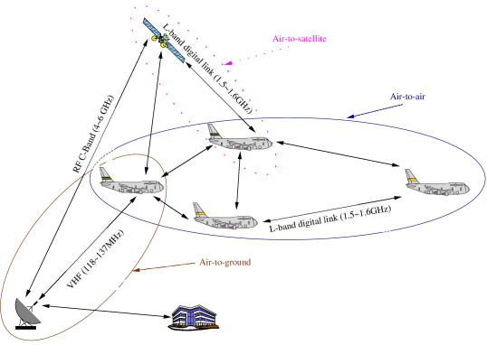
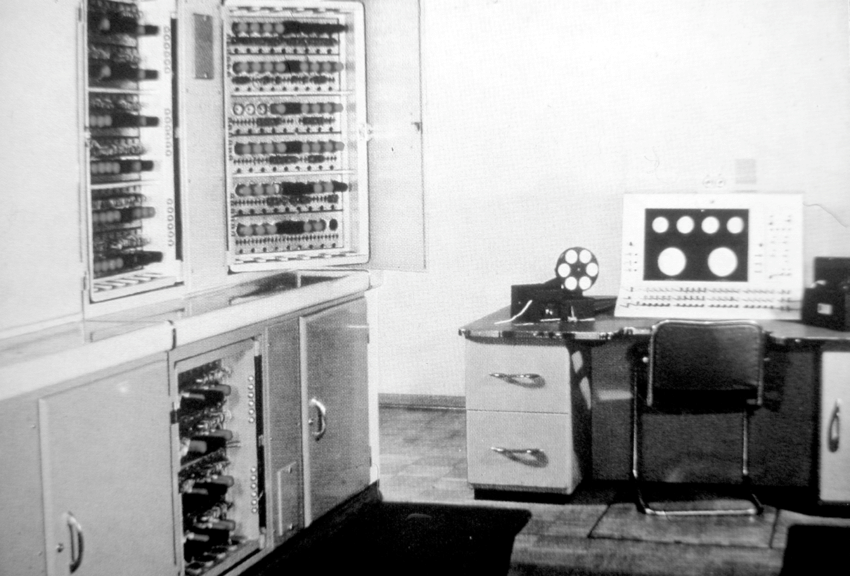
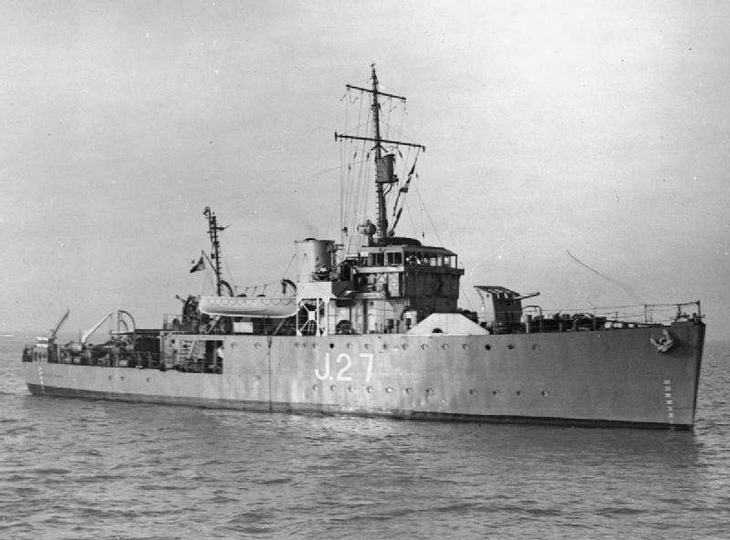
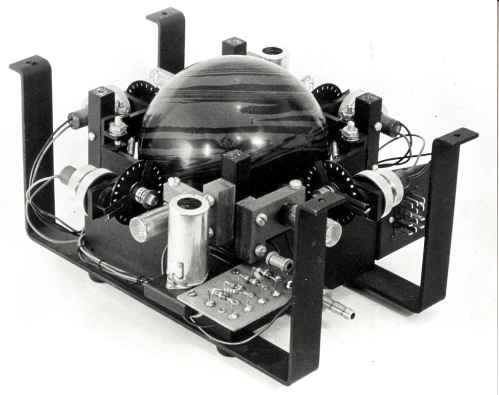
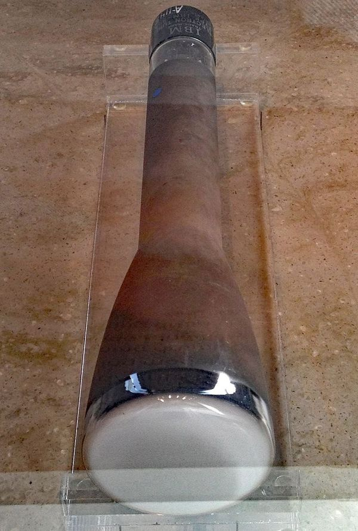
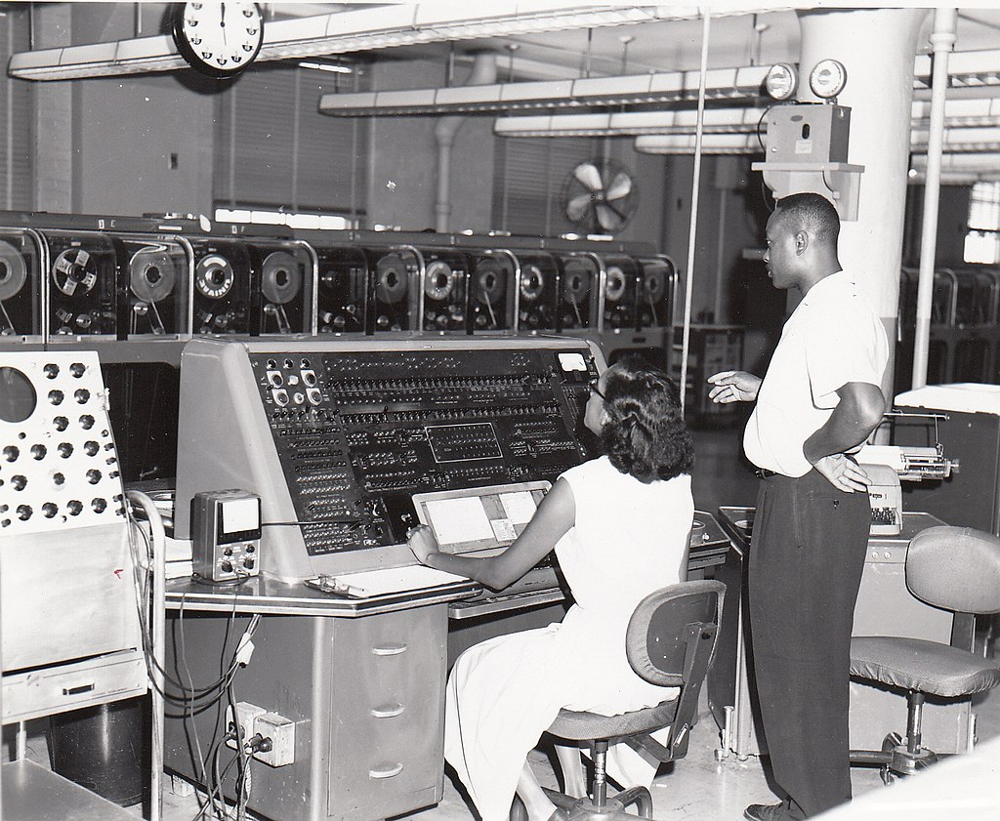

밀덕 잡담 : 세계 최초의 디지털 링크와 캐나다 해군의 비애
게시: 2022-08-04T06:30:37+09:00
<부제 : 꼬우면 미국으로 이민 오시든가>
요즘 밀덕들은 당연한 것으로 알고 있는 디지털 링크(아래 사진)는 간단히 말해 항공기/선박 등이 레이더 같은 자체 센서로 보는 것을 멀리 떨어진 다른 아군 항공기/선박들도 함께 보는 것. 별로 어려울 것 같지 않은데 의외로 어려운 기술이고, 또 의외로 일찍 구현이 된 기술. 그리고 그게 최초로 구현된 곳은 뜻밖에도 보잘 것 없는 캐나다 해군.

WW2가 끝나고 세계가 군축에 들어가자 WW2에서 독일군 U-boat 사냥에 헌신하던 캐나다 해군도 사정없이 찌그러 들었는데, 이제는 쏘련의 위협에 대처하기 위해 NATO 비스무리한 것이 서방국가들 간에 결성되자 캐나다 해군은 항모와 구축함 등을 잔뜩 도입하여 거기에서도 뭔가 존재감을 드러내고자 했음. 하지만 현실은 가차없는 예산 삭감... 그래서 캐나다 해군은 항모를 포함한 기동함대 대신 자신의 장기인 대잠전 기술로 존재감을 드러내고자 함. 그리고 그 핵심은 일종의 덕후들인 캐나다 해군 Electrical Engineer-in-Chief’s Directorate (EECD)팀. 대잠전의 핵심은 (다른 모든 전투 기술이 그러하듯이) 잠수함의 위치를 정확히 찾고 여러 아군함이 그 정보를 정확히 공유하는 것. WW2 때만 해도 소나니 레이더니 해서 센서 기술은 크게 발달했으나, 그렇게 얻은 정보는 철저하게 센서에서 유선으로 연결되는 콘솔에서만 보였음. 그러니 그 군함 밖으로 보내려면 화면에 보이는 것을 무선 통신으로 사람이 읽어서 전달해야 했는데, 그게 쉬울 턱이 없음. 소나에서 얻은 해저의 지형 지물, 고래, 잠수함 등등의 정보를 신호 처리를 거쳐 가다듬고 다른 군함의 화면에서도 똑같이 보이게 하려면 오로지 디지털 기술로만 가능하다고 EECD팀은 판단. 그 핵심 기술은 사실 이미 존재. 1937년 영국 기술자 Alec Reeves라는 사람이 이미 pulse-code modulation (PCM)라는 기술을 이용하여 사람 음성을 디지털 방식으로 전달할 수 있다고 발표한 것. 이걸 12년 후인 1949년 EECD 팀에 의해 활용되어 토론토에 설치된 레이더의 화면 정보를 오타와의 스크린에 띄우는데 성공. 그것이 가능했던 것은 영국의 전기전자업체인 Ferranti 사의 후원 덕분. 원래 캐나다 해군 DATAR 팀은 미국의 ENIAC 컴퓨터를 쓰려고 했는데 이유는 당시 세계적으로 실제로 돌아가는 범용 컴퓨터가 ENIAC 밖에 없었기 때문. 그런데 때마침 Ferranti 사는 독일군 암호 체계인 Enigma를 해독해낸 Alan Turing과 맨체스터 대학 연구자들에 의해 개발된 Mark I 컴퓨터 (사진, 미국 하바드의 Mark I과는 다른 것)를 상용화하려고 했었음. 캐나다 해군 EECD 팀의 연구 활동에 관심을 가지게 된 영국 Ferranti 사는 페란티 캐나다 법인을 세우고 이들과 협력, 캐나다 해군 내에 Digital Automated Tracking and Resolving (DATAR) 시스템을 구축하기로 함. 목표는 대잠전에서의 디지털 링크 구현.

이들의 노력은 결실을 맺어, 1953년 마침내 디지털 컴퓨터를 설치한 두 척의 Bangor급 소해정(아래 사진)에서 디지털 링크에 의한 소나 화면 공유를 시연. 캐나다 해군 수뇌부는 물론 미해군 고위 장교들과 미해군 연구소 소장까지 함께 한 이 시연에서, 이 두 소해정은 서로의 화면에 각자가 탐지한 (가상의) 잠수함 및 선박의 정보를 실시간으로 표시했고, DATAR팀에서 자체적으로 개발한 trackball (아래 사진)을 이용하여 cursor를 해당 선박이나 잠수함 표시에 갖다대면 그 객체의 속도와 방향, 거리 등이 표시될 뿐만 아니라 실시간으로 업데이트됨. 이 성공적인 시연에 캐나다 해군이 미해군을 초대했던 이유는 결국 이 디지털화 사업의 비용이 만만치 않아서 이게 사업화 되려면 미해군 정도의 덩어리가 큰 물주가 필요하다는 것을 깨달았기 때문.
 
그러나 결과적으로 미해군은 캐나다 DATAR 시스템에의 투자나 인수를 거부. 이유는 크게 2가지였는데
1) 미쳤다고 남의 나라가 개발한 기술 돈 주고 사오냐? 아이디어와 가능성은 충분히 보았으니 우리 공돌이 갈아넣어 우리가 만들면 그만이지. 2) 좋은 기술이긴 한데 진주만 습격의 아픔이 컸던 미해군은 대잠전보다는 대규모 공습에 대처하기 위한 대공 레이더 정보의 디지털화에 관심이 더 컸음. 게다가 당시의 진공관 기술로 만들어진 컴퓨터는 험한 해군 함정의 환경에는 매우 부적합했음, 가령 당시 메모리는 Williams tube (아래 사진은 IBM 초기 컴퓨터에 들어갔던 윌리엄스 튜브)라는 일종의 진공관으로 만든 것이었는데, 엄청난 열을 뿜어냈기 때문에 조그마한 소해정의 열악한 선실에 설치된 컴퓨터에서는 진공관이 끊임없이 터져나갔고 그렇게 터진 진공관을 갈아끼우느라고 허리춤에 예비 진공관을 주렁주렁 매달고 상체를 다 벗은 엔지니어들이 땀을 뻘뻘 흘리며 정신없이 일해야 했다고.

여기에 투자했던 Ferranti 사의 Mark I 컴퓨터도 결과적으로는 망한 셈. 1951년 2월에 나온 세계 최초의 상용 컴퓨터였던 Ferranti Mark 1은 불과 1달 뒤에 나온 미국제 UNIVAC I (아래 사진)에 완전히 밀려 컴퓨터 역사에 이름도 거의 올리지 못함. 참가로 Ferranti 사의 계열사는 훗날 Harrier를 포함한 영국 공군기들에게 레이더를 공급하기도 했음. 포클랜드 전쟁에서 드러난 그 품질은 매우 실망스러웠음.

** 결론: 크게 놀고 싶으면 큰 물로 가야 함. 최근 블라인드에 떴던 삼성전자 임원의 인터뷰가 화제가 되었는데, 그 인터뷰에서 가장 인상적이었던 말은 '플랫폼 사업에서 성공하려면 미국 회사 아니면 어렵다'는 부분. 이와 비슷한 이야기 같음.